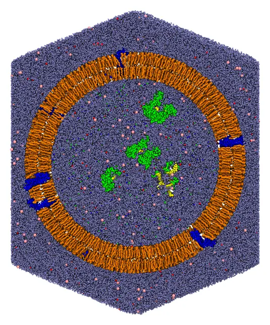
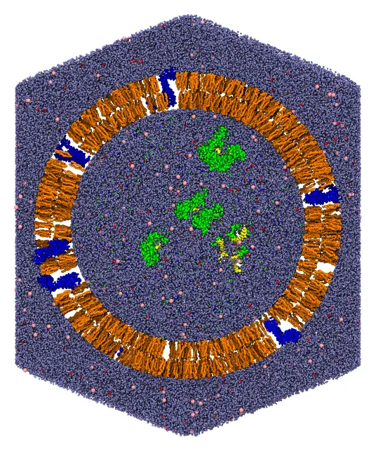

Exosome (a very large system)
An exosome, an extracellular vesicle of 51 nm, with all atoms: an asymmetric lipid bilayer crossed by 80 copies of the tetraspanins CD81 and CD9, 8 complexes of Argonaute-2 with a microRNA and 2 nucleosomes inside, and water and NaCl (0.15 mol/L) inside and outside, in a truncated octahedron periodic cell with 580 Å between opposite hexagonal faces. The system has 13.6 million atoms and 3.6 million molecules. It is packed in two steps: first the proteins, then the lipids, the water and the ions around them.

A slab through the center of the exosome: the tetraspanins (blue) crossing the bilayer (orange), the Argonaute-2 complexes and the nucleosomes in the lumen (green, with their nucleic acids in yellow), water (light blue), and sodium (red) and chloride (pink) ions.
The files are the packmol_exosome set of MolSimTestFiles: download and extract packmol_exosome.tar.gz (1 MB), which contains the two input files, proteins.inp and exosome.inp, and the structures, as mmCIF files: cd81.cif and cd9.cif (the tetraspanins), ago2_mirna.cif (the complex of Argonaute-2 with a microRNA), nucleosome.cif, popc.cif, pope.cif, pops.cif and dppc.cif (the lipids), water.cif, sodium.cif and chloride.cif.
The system
- The proteins. CD81 (OPM 5TCX) and CD9 (OPM 6K4J), Argonaute-2 with a microRNA (PDB 4W5N) and the nucleosome (PDB 1KX5), with hydrogens. Preparing the structures of the proteins (adding missing atoms and hydrogens, for example with PDBFixer) is not a task of Packmol. The tetraspanins are in the frame of the OPM database: the normal of the membrane along z, the middle of the membrane at z = 0, and the extracellular side at z > 0.
- The lipids. The membrane is asymmetric, as the plasma membrane from which exosomes bud: the outer leaflet has POPC and DPPC (standing for sphingomyelin), 2:1, and the inner one POPE, POPS and POPC, 2:1:1. The lipids are the built-in lipids of Packmol.jl (see
Packmol.builtin_lipid), oriented as in the Nanoliposomes tutorial: the head atom in a band, the ends of the chains within 6 Å of the middle of the bilayer, at 228 Å from the center. The number of lipids of each leaflet is that of the most crowded surface of the leaflet, plus 10%, minus the cross-sections of the proteins in the leaflet (seePackmol.cross_section): 10,037 lipids outside and 8,111 inside. - Water and ions. Water at 1 g/mL in the volumes left inside and outside the vesicle, NaCl at 0.15 mol/L, and counterions for the charges of the contents of the lumen and of the POPS (inside) and of the tetraspanins (outside).
The numbers of molecules were computed, and the input files written, by a script of the repository of Packmol.jl, dev/tutorials/exosome.jl.
The regions, as distances from the center of the vesicle:
| Component | Region (Å) |
|---|---|
| Tetraspanins | Cα atoms 18 to 24 Å from the middle of the membrane: outside 245 (extracellular side), inside 211 (intracellular side) |
| Argonaute-2 complexes and nucleosomes | below 191.7 |
| Inner leaflet (POPE, POPS, POPC) | head atom below 200, ends of the chains above 222 |
| Outer leaflet (POPC, DPPC) | ends of the chains below 234, head atom above 256 |
| Water and ions inside | below 196.7 |
| Water and ions outside | above 258.1, up to the faces of the periodic cell |
Command line
Step 1: the proteins
The proteins are packed first, alone, and then fixed in the packing of the rest of the system. Large molecules that are not part of a continuous phase are best packed this way: packed together with the water, they start overlapping it, and the water trapped inside them is slow to leave.
The tetraspanins are oriented across the membrane as the lipids are, by constraints on some of their atoms: the Cα atoms 18 to 24 Å from the middle of the membrane, on the extracellular side, outside a sphere 17 Å beyond the middle of the membrane, and those on the intracellular side inside a sphere 17 Å within it. The proteins then cross the membrane, with the extracellular side outwards, tilted by 10° on average. The indices of these atoms were taken from the coordinates of the structures in the OPM frame.
The input file proteins.inp (click to expand)
#
# The proteins of the exosome: 40 copies of each of the tetraspanins CD81 and CD9,
# crossing the membrane (the middle of the membrane at 228.0 Å from the center), and,
# in the lumen, 8 complexes of Argonaute-2 with a miRNA and 2 nucleosomes. The output
# is fixed in the packing of the exosome (exosome.inp).
#
tolerance 2.0
output proteins.cif
# To write only the initial placement of the molecules to the output file,
# without packing them (to check the constraints), uncomment the line below.
# check_initial_placement
# The tetraspanins: the Cα atoms 18 to 24 Å from the middle of the membrane on the
# extracellular side (first atoms block) outside, and on the intracellular side (second
# atoms block) inside
structure cd81.cif
number 40
atoms 574 588 608 629 645 1410 1426 1440 1474 1491 1510 1554 1830 1844 1858 1868 1890 1900 1916 1932 1954 1968 1988 2005 2020 2034 2053 2342 2357 2660 2679 2699 2710 2717
outside sphere 0. 0. 0. 245.0
end atoms
atoms 30 52 3159 3170 3177
inside sphere 0. 0. 0. 211.0
end atoms
end structure
structure cd9.cif
number 40
atoms 621 633 661 675 697 708 727 747 808 875 886 906 927 1740 1757 1791 1806 1863 1878 1926 2175 2231 2246 2301 2311 2347 2368 2378 2853 2869 2901 2915 2937
outside sphere 0. 0. 0. 245.0
end atoms
atoms 21 36 52 74 81 88 3335 3346 3356 3375
inside sphere 0. 0. 0. 211.0
end atoms
end structure
# The lumen
structure ago2_mirna.cif
number 8
inside sphere 0. 0. 0. 191.7
end structure
structure nucleosome.cif
number 2
inside sphere 0. 0. 0. 191.7
end structure
packmol proteins.inpThis takes about 8 seconds with 14 threads, and writes the proteins to proteins.cif.
Packmol places the proteins at random positions satisfying the constraints, not evenly over the surface. To distribute them evenly (for example, on the points of a Fibonacci lattice of the sphere), write a short script that places them, and fix its output in the packing of the rest of the system. An AI agent can write such a script for the surface of your system (see Using your AI agent).
Step 2: the lipids, the water and the ions
The output of the first step is fixed (fixed 0. 0. 0. 0. 0. 0. keeps the coordinates of the file):
The input file exosome.inp (click to expand)
#
# An exosome: an extracellular vesicle of 51 nm, with 40 copies of each of the
# tetraspanins CD81 and CD9 in an asymmetric bilayer, 8 complexes of Argonaute-2 with
# a miRNA and 2 nucleosomes inside, and water and NaCl (0.15 mol/L) inside and outside,
# in a truncated octahedron. All atoms, written as mmCIF.
#
tolerance 2.0
output exosome.cif
pbc octahedral 0. 0. 0. 580.0
periodic_boundary_style octahedral
# To write only the initial placement of the molecules to the output file,
# without packing them (to check the constraints), uncomment the line below.
# check_initial_placement
# The proteins, packed by proteins.inp, fixed
structure proteins.cif
number 1
fixed 0. 0. 0. 0. 0. 0.
end structure
# Inner leaflet: POPE
structure pope.cif
number 4055
atoms 1
inside sphere 0. 0. 0. 199.7
end atoms
atoms 79 122
outside sphere 0. 0. 0. 222.0
end atoms
end structure
# Inner leaflet: POPS
structure pops.cif
number 2028
atoms 1
inside sphere 0. 0. 0. 200.1
end atoms
atoms 81 124
outside sphere 0. 0. 0. 222.0
end atoms
end structure
# Inner leaflet: POPC
structure popc.cif
number 2028
atoms 1
inside sphere 0. 0. 0. 199.9
end atoms
atoms 88 131
outside sphere 0. 0. 0. 222.0
end atoms
end structure
# Outer leaflet: POPC
structure popc.cif
number 6691
atoms 88 131
inside sphere 0. 0. 0. 234.0
end atoms
atoms 1
outside sphere 0. 0. 0. 256.1
end atoms
end structure
# Outer leaflet: DPPC
structure dppc.cif
number 3346
atoms 84 127
inside sphere 0. 0. 0. 234.0
end atoms
atoms 1
outside sphere 0. 0. 0. 255.8
end atoms
end structure
# The lumen: water and ions
structure water.cif
number 1008127
inside sphere 0. 0. 0. 196.7
end structure
structure sodium.cif
number 4955
inside sphere 0. 0. 0. 196.7
end structure
structure chloride.cif
number 2747
inside sphere 0. 0. 0. 196.7
end structure
# Outside: water and ions
structure water.cif
number 2583306
outside sphere 0. 0. 0. 258.1
end structure
structure sodium.cif
number 7065
outside sphere 0. 0. 0. 258.1
end structure
structure chloride.cif
number 7025
outside sphere 0. 0. 0. 258.1
end structure
First check the initial placement: uncomment the check_initial_placement line of the input file, and run it (see Checking the initial placement):
packmol exosome.inpThis takes 2.5 minutes with 14 threads, and 15 GB of memory. A slab through the center of the initial approximation shows every component in its region:

The initial approximation: the molecules are in their regions, but overlap.
Then comment the line again, and run the packing:
packmol exosome.inpThe packing converged in 65 loops, which took 33 minutes with 14 threads, using 24 GB of memory. Writing the output, a 3.5 GB mmCIF file, takes about a minute of that.
- Check the initial placement first: mistakes in the constraints of a system of this size are expensive to find after the packing.
- Use mmCIF files (
.cif): the PDB format cannot number more than 99,999 atoms or 9,999 residues. writeoutsets the minimum time between the writes of the best solution during the packing (60 s by default): writing a file of this size takes longer than a packing loop.
Julia
The same two steps in Julia:
using Packmolorigin = [0., 0., 0.]# Step 1: the proteins. The tetraspanins are oriented by the Cα atoms 18 to 24 Å from# the middle of the membrane, on the extracellular and the intracellular sidestetraspanin(file, extracellular, intracellular) = structure_type(file; number = 40, atom_constraints = [ extracellular => OutsideSphere(origin, 245.), intracellular => InsideSphere(origin, 211.), ])lumen = [InsideSphere(origin, 191.7)]proteins = PackmolSystem([ tetraspanin("cd81.cif", [574, 588, 608, 629, 645, 1410, 1426, 1440, 1474, 1491, 1510, 1554, 1830, 1844, 1858, 1868, 1890, 1900, 1916, 1932, 1954, 1968, 1988, 2005, 2020, 2034, 2053, 2342, 2357, 2660, 2679, 2699, 2710, 2717], [30, 52, 3159, 3170, 3177]), tetraspanin("cd9.cif", [621, 633, 661, 675, 697, 708, 727, 747, 808, 875, 886, 906, 927, 1740, 1757, 1791, 1806, 1863, 1878, 1926, 2175, 2231, 2246, 2301, 2311, 2347, 2368, 2378, 2853, 2869, 2901, 2915, 2937], [21, 36, 52, 74, 81, 88, 3335, 3346, 3356, 3375]), structure_type("ago2_mirna.cif"; number = 8, constraints = lumen), structure_type("nucleosome.cif"; number = 2, constraints = lumen), ]; output = "proteins.cif", tolerance = 2.0,)packmol(proteins)# Step 2: the lipids, the water and the ions, around the proteins, fixedfixed_proteins = structure_type("proteins.cif"; number = 1, fixed = ([0., 0., 0.], [0., 0., 0.]))# The lipids of a leaflet: the head (atom 1) and the ends of the two chainsinner(file, number, head, chain_ends) = structure_type(file; number, atom_constraints = [[1] => InsideSphere(origin, head), chain_ends => OutsideSphere(origin, 222.)])outer(file, number, head, chain_ends) = structure_type(file; number, atom_constraints = [chain_ends => InsideSphere(origin, 234.), [1] => OutsideSphere(origin, head)])lipids = [ inner("pope.cif", 4055, 199.7, [79, 122]), inner("pops.cif", 2028, 200.1, [81, 124]), inner("popc.cif", 2028, 199.9, [88, 131]), outer("popc.cif", 6691, 256.1, [88, 131]), outer("dppc.cif", 3346, 255.8, [84, 127]),]inside = [InsideSphere(origin, 196.7)]outside = [OutsideSphere(origin, 258.1)]solvent = [ structure_type("water.cif"; number = 1008127, constraints = inside), structure_type("sodium.cif"; number = 4955, constraints = inside), structure_type("chloride.cif"; number = 2747, constraints = inside), structure_type("water.cif"; number = 2583306, constraints = outside), structure_type("sodium.cif"; number = 7065, constraints = outside), structure_type("chloride.cif"; number = 7025, constraints = outside),]system = PackmolSystem([fixed_proteins; lipids; solvent]; output = "exosome.cif", tolerance = 2.0, unitcell = octahedral_unitcell(Float64, 580.0), # centered at the origin # check_initial_placement = true, # uncomment to only place the molecules)# Write the output in the shape of the truncated octahedrontriclinic_to_octahedral(system)packmol(system)